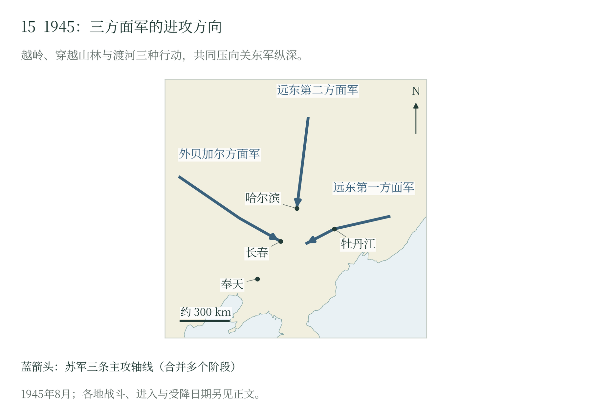
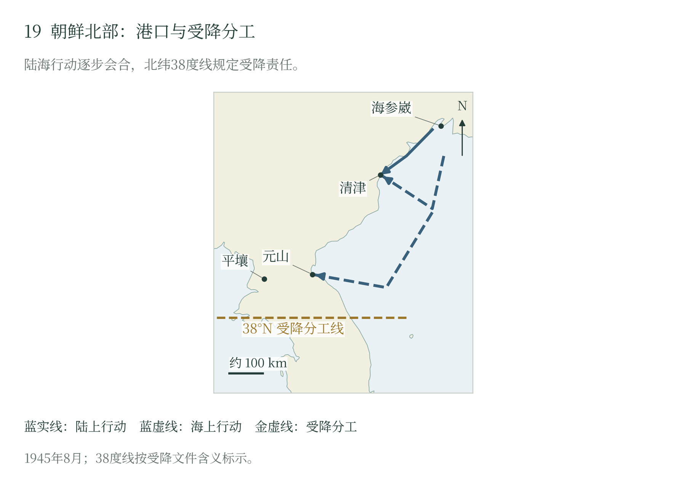

第十四章 满洲战役：多向进攻、指挥与社会代价
战役的目标：使关东军失去重新集结的时间
1945年8月，苏军从相距甚远的边境同时压向东北腹地。华西列夫斯基麾下的部队力求抢在关东军完成收缩之前，夺取铁路枢纽、城市和对外通道；关东军则准备让边境部队迟滞进攻，争取在通化、安图一带集结，继续抵抗。双方都在争取把分散的人、物资和命令重新集中起来的时间。战役进行中，日本中央决定投降。苏军继而加速占领要点、接受缴械和控制人员流动，原先的战场同时成了接管地方的现场。 〔1〕
苏军远东总司令华西列夫斯基拥有统筹陆海空行动的司令部。外贝加尔方面军由马利诺夫斯基指挥，从蒙古和外贝加尔方向向东推进；梅列茨科夫的远东第一方面军从滨海地区向西突入；普尔卡耶夫的远东第二方面军从黑龙江方向向南行动。这种组织把相隔广阔山地、河流和草原的作战轴线置于共同安排之下，使主攻、牵制、海上封锁及后续占领能够调整衔接。苏军在欧洲积累的方面军作战经验，由此落实为适应远东空间的指挥结构。〔2〕
装备和兵种的配置围绕各方向的任务展开。西部适合较大规模的机械化纵深突进，得到车辆和摩托化步兵支援；东部面对较密集的筑垒地域，配置较强的炮兵和突击力量；在山林、沼泽与大河方向，工兵、运输和舰艇承担了打开道路的任务。先遣支队负责迅速夺取桥梁、路口和城市入口，后续主力处理尚存的抵抗并维持交通。这一安排把“集中力量突破”与“分路扩大成果”连接起来，也使先锋的推进速度与全军补给速度始终存在张力。〔3〕
8月8日莫斯科的宣战通知与9日远东的军事行动，标志着这套部署投入实施。同期外交电报记载，莫洛托夫8日通知日本大使，自9日起两国处于战争状态。开战的军事效果随即出现在多个方向：日军需要同时判断西部装甲纵队、东部筑垒地带和北部渡河部队的威胁，原本用于机动调整的时间迅速缩短。〔4〕
防御体系的重建与指挥上的分歧
关东军的兵力数字记录了一个不断变化的组织。长期抽调老部队后，新编部队、重新动员的人员与原有守备力量并存；训练、火炮、运输和通信的差异，直接影响各单位能够承担的任务。战后日方编述尤其强调，第一方面军一些枪械仍留在营区供新兵训练，弹药和物资也处于旧仓库、新阵地与运输线路之间。对接战部队而言，仓储总量只有经过装运、分发并送到阵地，才转化为可用力量。〔5〕
1945年5—6月形成的防御计划，以逐次后退和纵深持久为轴心。东部第一方面军拟用边境小部队拖延敌军，主力配置在边境后方，再向通化、安图地区收缩。西部第三方面军以边境迟滞部队掩护主力，在长春、沈阳及更东南的阵地之间逐次防御。北部第四军则在边境和铁路沿线阻击，最后向齐齐哈尔、哈尔滨方向退却。计划需要新建工事、调动部队和迁移仓储共同完成；苏军开战时，这些准备仍在进行。〔6〕
这套方案把空间让给进攻者，以保存部队为目的，也把大量居民、殖民机构及固定资产留在作战撤收的道路上。通化最后防御区与长春、沈阳等政治和铁路中心的价值，形成了难以同时满足的要求。原日军军官的战后编述记载，第三方面军司令官后宫淳希望依托大连—长春一线组织抵抗；关东军总司令山田乙三担心由此演成决战，破坏向东南收缩的总体安排。12日，山田飞往通化新司令部，情报部门却因当地通信不足留在长春。领导人的分歧与司令部的分置，使作战意图的协调更加困难。〔7〕
苏军正是在这段调整过程中展开多向压力。西部突进威胁铁路和纵深集结区，东部战斗牵住主力，北部渡河又增加了新的撤退需求。对于一个还在移防、补编和建设阵地的防御体系，三处压力会共同占用车辆、列车、通信线路和指挥人员。关东军失去的是在较完整的交通网内重新安排战斗的能力；局部部队仍能作战，其行动却愈来愈难服务于一项全战区计划。
西部：机械化纵深突进与补给的限度
外贝加尔方面军把近卫第6坦克集团军、第39集团军等力量投向大兴安岭及其两侧，利用日军部署相对薄弱的空间进入东北平原。第36集团军负责海拉尔方向，苏蒙骑兵机械化群向更南侧行动。不同轴线共同拓宽了进攻正面，使日军很难依据少数铁路口和山口判断主力到达的方向。蒙古部队与苏军的联合行动，也使草原侧翼成为战役的一部分。〔8〕
日军防御计划倚重的大兴安岭，苏军须用道路、工程和运输去跨越。坦克越岭后获得了深入平原的通路，燃油却很快紧张起来。指挥员只得集中剩余油料供给先遣部队，把后续力量分作不同梯队。鲁北、突泉一带的推进，就这样受车辆维修、道路和燃料支配：先头部队赶得越远，越要等后方把继续行动的本钱送来。 〔9〕
海拉尔的节奏又不同。筑垒地域内的日军依托工事抵抗，苏军留下一部分部队围攻，另一些继续向东。于是同一条进攻方向上，有人还在堡垒和火力点前作战，有人已经沿道路深入腹地。绕进与攻坚分担任务，才使西部攻势得以继续展开。 〔10〕
对日军而言，装甲纵队深入腹地增加了撤退决策的风险。等待邻部到齐，可能让通路落入苏军手中；提前离开阵地，又可能失去联系和重装备。关东军原先借助距离分期后退的设想，被对手跨越薄弱地带、抢占要点的行动压缩。日方后来的记述把交通中断与情报不完整反复连在一起，反映出战役机动对指挥系统的打击。〔11〕
东部与北部：道路、要塞与江河上的协同
远东第一方面军的主力从东部山林和筑垒地带切入，第5集团军与第1红旗集团军沿不同轴线趋向牡丹江。这里的地形将火力、部队和运输集中到有限道路，桥梁与山间通道具有突出的价值。苏军既组织突击力量破坏正面防御，又使先遣部队寻求侧后通路；日军则依托阵地和城市外围延缓进攻。牡丹江一线的战斗延续到16日，成为东部日军组织防御、掩护撤收的重要阶段。〔12〕
牡丹江的结果同时包含城市被占、部队撤退和部分阵地失去联系。日军第五军等力量试图向后方收缩，有些部队接到了撤退命令，有些分队仍滞留原地。苏军夺取枢纽的效果，在于改变后续交通和指挥条件：尚能战斗的日军必须面对道路被截、补给转移和联络困难。城市的失守因此具有超过城市本身的战役意义，撤出的部队则继续构成后续受降与缴械工作的对象。〔13〕
北部的第15集团军与黑龙江舰队把渡河、舰炮和登陆结合起来。黑龙江、松花江既是阻碍，也是通向腹地的运输通道。舰艇掩护渡河并运送人员，登陆分队向沿江据点施加压力，地面部队再沿道路向纵深推进。富锦方向的行动尤其显示，火力支援、步兵登陆、装甲和后续地面力量需要先后衔接。河运能力增加了苏军的选择，也要求指挥机关协调航道、码头和陆上接应。〔14〕
同属远东第二方面军的第2红旗集团军在孙吴方向承担另一路任务。那里的抵抗、后续围歼和缴械进度，应放在自己的道路与阵地体系内观察。两条轴线共同牵制北部日军，却具有不同的节奏。北部作战最能显示补给跟进的重要：先遣部队渡河后可以迅速展开，后勤分队、车辆和重装备通过河流所需的时间，则限制着主力能够连续行动的强度。〔14〕
三方向进攻由此形成相互作用。西部增加纵深压力，东部持续削弱日军有组织的防御，北部与沿江行动扩大其交通和指挥负担。各方面军取得进展的办法有所差别，共同效果是使关东军越来越难按原计划集中力量。苏军的优势落实在对道路、渡口、铁路枢纽和城市入口的连续争夺中。
东部战区的南翼还伸向图们江和朝鲜东北海岸。第25集团军沿山地道路推进，舰队从海上接近港口，陆海部队在清津会合，使腹地作战与日本对外交通的切断相互衔接。对关东军而言，向东南收缩需要道路畅通，也需要朝鲜方向仍能提供接应；沿海据点逐步落入苏军手中，进一步缩小了这种回旋空间。这里的战略效果由陆军推进、海上输送和港口控制共同形成，并为日本投降后的分区接收提供了实际驻军条件。〔15〕
日本投降之后：从战斗命令到缴械执行
东北战局的变化与日本本土受到的打击，分别压缩了东京继续战争和寻求有利停战条件的余地。广岛、长崎先后遭到原子弹袭击，城市与居民面临的毁灭性危险骤然加深；苏联参战则同时带来新的战场和求和渠道的断裂。东京此前仍指望莫斯科居间斡旋，如今设想中的调停者已成为交战国，等待苏联帮助改善条件失去了原来的前提。苏军多路突进又使大陆防御承受急剧增大的压力。本土毁灭的风险与大陆战争的扩展相互叠加，使以拖延换取较有利条件的办法付出更高代价。〔16〕
日本领导层把以天皇为中心的统治秩序放在接受条件的核心。“国体护持”既约束着接受条件，也给结束战争提供了理由。8月10日，裕仁介入最高决策，日本向盟国通告接受《波茨坦公告》，附带的理解是天皇统治国家的大权不受变更。11日的盟国答复把天皇及政府权力置于盟军最高统帅之下，并将最终政体交由日本人民自由表达的意志决定。外务省认为仍有保全国体的余地，陆军则要求再次照会，确认天皇地位。在这场争执中，军队已经承受的失败，还须经过统治权将如何存续的政治判断，才能化为共同的停战决定。14日，裕仁再次裁决接受；最高权威亲自出面，为各机关终止争论、执行受诺提供了依据。〔17〕
裕仁还须向此前被要求坚持战争的臣民解释这次转向。署于14日、翌日广播的终战诏书，称敌人使用了杀伤无辜的新型炸弹，将继续战争的后果推到民族存亡的高度，同时宣告已经能够护持国体。诏书将臣民的灾难与皇室统治的延续放在一起，把接受投降表述为保存国家的行动，要求民众压住愤激、维持秩序。借天皇本人的声音宣布这一解释，正是把曾经用来支持战争的效忠关系，转用于结束战争。诏书同时沿用帝国自存的战争解释；终战的劝服之中，仍保存着对既往战争的自我辩护。〔18〕
15日，日本以广播传达投降决定。同日大本营陆军第1381号命令要求贯彻14日诏书，在另有命令之前继续当前任务，同时停止“积极进攻作战”，维持军纪与团结。16日第1382号命令第一项进一步要求各指定司令官立即停止战斗行动。从政治决定到军令，部队任务经过了具体转换；各地还须确定接触对象、集合地点和交出武器的程序。东北已经受损的通信和正在移动的司令部，使传令与执行带有强烈的地方性。〔19〕
面向军队的说服更着重于作战前提的改变。17日赐予陆海军军人的诏谕，直接以苏联参战说明继续战争将危及帝国存在，又在赞扬军人战斗精神之后，要求他们遵从天皇意旨、保持团结和纪律。对臣民强调毁灭性灾难，对军人强调新增强敌和服从，两份文书各自承担了安定社会、约束武装力量的任务。诏谕的说服与军令执行共同服务于停战，实际效果仍须各部接收并履行。〔20〕
第一方面军司令部15日听到广播与16日获得军事停战信息，是接收不同种类信息的两个节点。战后日方记录叙述了通过飞机携带、投送通知等办法联系部队的过程。关东军总参谋长署名的原件又记载，19日秦彦三郎代表总司令与华西列夫斯基会见，将20日列为停止战斗、交出武器的期限，并要求前线地方交涉依据这次会见的安排进行。地方接触因此获得了战区层面的指示，限期之后的实际进度则落实在各驻军的缴械记录中。〔21〕
苏军的命令也规定了停止战斗的责任。18日，华西列夫斯基向三个方面军与太平洋舰队下令：凡日满军停止战斗的地段，苏军立即停止战斗；对投降人员，从接收至营地拘押都须善加对待，由各级指挥员和军官直接监督。19日，外贝加尔方面军再次下达停战要求，同时命令机动支队迅速取得重要城市、基地和交通枢纽，并授权师、旅指挥员自行同日满军接触，安排本区受降与缴械。停止射击、推进占领和接收人员由此成为并行任务，地方指挥员既有处理交涉的权限，也承担执行停战与保护降军的责任。〔22〕
苏军也在调整行动方法。迅速抵达城市和交通要点、控制机场与接收日军指挥机构，成为8月下旬的重要任务。航空输送与地面机动支队配合，使少量先到人员能够先建立联系，再由后续部队落实占领与缴械。在哈尔滨、吉林等地，先遣人员、地面部队和江上舰艇各自到达，构成连续的接收过程。军事推进由摧毁防御体系转向建立地域控制，速度仍然重要，但它开始服务于新的政治与行政目的。〔23〕
各部队和司令部完成缴械的日期并不一致。JACAR对战区的概述将武装解除大体完成放在8月底，其年表另列关东军总司令部9月5日解除武装。9月2日正式降书要求武装力量停止敌对并执行投降命令，为这些地方程序提供了国家层面的文件。战区大部分部队的集中、特定司令部的缴械和正式签署，各自完成了战争结束的一层手续。 〔24〕
军事崩溃如何成为社会灾难
东北的军事撤退同时牵动了殖民移民的逃亡。日军战后编述承认，1945年春已经讨论居民疏散，却因运输负担、保密考虑和对殖民定居政策的坚持而迟迟推进。等到战事发生，才又暂停部分军需运输，把列车优先交给居民。早些时候的迟延，此时要由等待疏散的居民承担；重新分配列车，已难补上全部缺口。 〔25〕
来不及登车的居民徒步向西、向南逃难，集合地又需要粮食、住房和医疗。战后日方记录中的饥饿、疾病、失散及幼儿死亡，使后勤问题从军队的燃料和弹药延伸到普通人的生存。殖民移民原先依赖军政机构、铁路与公司组织的生活，一旦这些系统解体，妇女、儿童和老人尤其难以自行获得运输与供给。〔26〕
城市居民的处境同时受到管理机构瓦解与占领措施的影响。苏军外贝加尔方面军政治部8月23日报告称，沈阳一些企业虽保存完整，却因日方经营者离去而停工；铁路主管人员逃离，车站尚存而运输失调，商业只剩小规模蔬果交易。报告记述商店和住宅遭到抢掠、夜间枪声不断，并承认恢复正常生活的措施尚未奏效，将原因归于驻军较少、主力未到。20日的苏军城防司令命令已经要求原行政人员留任、居民三日内交出枪械，并限制夜间通行；24日上报仍要求增加驻军。接收军队已建立军管机关，维持城市生活的能力却尚待落实。〔27〕
苏方报告将抢掠归责于当地部分中国人；美国战略情报局人员的记录经后出研究引述，则揭示苏军人员参与抢掠和性暴力。两种材料分别留下了占领机关的自述与外部观察，受害者经历和个案责任还需要地方记录补足。军事控制取得以后，约束部队、保护居民和恢复供给已经成为占领当局面对的现实责任。〔28〕
财产转移另有明确的上级政策。华西列夫斯基18日命令把缴获的企业、仓库设备和物资列为战利品，清点后用于部队供应或运往苏联边境地区，并禁止应地方代表、包括中方代表的要求交付这些物资；外贝加尔方面军19日命令进一步要求迅速登记并运回武器、粮食和工业设备。这把设备处置权集中于苏军指挥机关，使恢复生产与军方提取物资形成直接张力。具体工厂的损失规模仍须逐项财产和运输记录确认。〔29〕
缴械后的集中把人员带入新的管理程序：登记、甄别、移送，继而是劳动配置与遣返。战斗中被俘者、伤员和整建制投降的部队可能进入同一集合点，前线损失与此后的管理名册因而需要按对象和阶段衔接。18日命令已经将善待要求延伸到营地，并交由军官监督；其后的劳动政策、运输与营地生活，将在战俘章继续展开。〔30〕
关东军最终失去了在整个战区组织持续防御的能力。苏军多路推进，打乱了它尚在进行的重编、移防与补给；日本中央决定投降后，战斗又陆续转为缴械和占领。胜利者取得城市、铁路和大量人员，也接过了约束军队、维持生活与保护被接收者的责任。东北的战役由此伸向朝鲜北部、海岛港口，以及战后的营地和谈判桌。
决定、命令与接收节点
| 时间 | 行动与责任 | 证据 |
|---|---|---|
| 8月14—16日 | 日本决定接受投降；15日广播与停止积极进攻命令；16日命令立即停止战斗 | [B018B601B014 |
| 8月18—19日 | 苏军要求在日满军停战地段立即停战、善待降军；外贝加尔方面军授权师旅办理缴械，并加快占领枢纽 | [B602 |
| 8月19—20日 | 秦彦三郎报告会见安排，以20日为停战、交出武器期限 | [B002 |
| 8月底—9月5日 | 战区大体缴械、9月2日正式降书及9月5日关东军总司令部缴械，属于不同层级的手续 | [B001B004B006 |
资料短注：兵力比较以同一时点、地域与编制范围为准；伤亡、接收及后续抑留名册分别保留统计对象，交叠人员经核对后再行汇总。

外贝加尔方面军越岭进入纵深，远东第一方面军从东部山林向牡丹江推进，远东第二方面军组织北部渡河和沿江行动。三处进攻共同争夺关东军重新集结所需的道路与时间。
随文简图 · 自然地理底图：Natural Earth；历史依据见本章注及大图15逐图来源。大图15（图册第15页）

第25集团军与太平洋舰队分别从陆地和海上接近朝鲜东北部。清津经过先遣登陆、增援和陆海会合，苏军继而向元山等地行动；北纬38度线规定接受日军投降的分工。
随文简图 · 自然地理底图：Natural Earth；历史依据见本章注及大图19逐图来源。大图19（图册第19页）
本章注释
- 〔1〕 B010B013 ↩
- 〔2〕 B010 ↩
- 〔3〕 B010 ↩
- 〔4〕 B003B010 ↩
- 〔5〕 B010B013 ↩
- 〔6〕 B010 ↩
- 〔7〕 B013 ↩
- 〔8〕 B010 ↩
- 〔9〕 B010 ↩
- 〔10〕 B010 ↩
- 〔11〕 B013 ↩
- 〔12〕 B010 ↩
- 〔13〕 B010B013 ↩
- 〔14〕 B010 ↩
- 〔15〕 B010B508 ↩
- 〔16〕 B511 ↩
- 〔17〕 B511 ↩
- 〔18〕 B701 ↩
- 〔19〕 B601B014B018 ↩
- 〔20〕 B702 ↩
- 〔21〕 B007B013B002 ↩
- 〔22〕 B602 ↩
- 〔23〕 B010 ↩
- 〔24〕 B001B006B004 ↩
- 〔25〕 B013 ↩
- 〔26〕 B013 ↩
- 〔27〕 B603 ↩
- 〔28〕 B603B507 ↩
- 〔29〕 B602 ↩
- 〔30〕 B602 ↩